UDN
Search public documentation:
TerrainAdvancedTexturesJP
English Translation
中国翻译
한국어
Interested in the Unreal Engine?
Visit the Unreal Technology site.
Looking for jobs and company info?
Check out the Epic games site.
Questions about support via UDN?
Contact the UDN Staff
中国翻译
한국어
Interested in the Unreal Engine?
Visit the Unreal Technology site.
Looking for jobs and company info?
Check out the Epic games site.
Questions about support via UDN?
Contact the UDN Staff
テレインの高度なテクスチャ
ドキュメント概要：テレイン テクスチャリングの問題解決とテレイン テクスチャのディテールとクオリティの増加。 原著者：David Green?- テレインの高度なテクスチャ
- テレイン テクスチャリングの概観
- テレイン テクスチャリングに関する警告
- インスタンスのマテリアルのデザイン
- マテリアル表現式の基礎単位
- 複雑なマテリアル デザイン ノート
- ディテール テクスチャ：近接距離ディテールの追加
- NormalMap テクスチャ：バンプ ディテールの追加
- マルチ UV ミキシング：スカラー ミキシングを通してタイリングを減少させる
- ランダム タイリング マスク：テクスチャ マッピングをランダムにし、タイリングを減らす
- マクロ テクスチャ：バラエティのためにテクスチャをブレンドする
- スーパー マスク：頂点レベルを超えてテレイン ディテールを増加させる
- テクスチャ パッキング：大きなテクスチャ タイル セットを実装する
- 1:1 オーバーレイ：複数の高解像度テクスチャをテレイン全体でタイルする
テレイン テクスチャリングの概観
テレイン テクスチャリングは、広いバラエティのメソッドとソリューションを有する莫大なトピックです。このチュートリアルでは、一般的なテレビゲームのテレイン テクスチャの問題を管理する Unreal Engine 3 で利用可能ないくつかのメソッド、テレイン テクスチャリングの質の改善やディテールの増加のメソッドなどをカバーします。このチュートリアルは、さまざまなテクスチャリングの問題へのソリューションを示す複雑なセクションに分けられています。 備考 ：これは、高度なチュートリアルであり、以下の内容に精通しているものとして書かれています。- Adobe PhotoShop などのソフトウェアを使用してのデジタルな画像の作成、編集
- 画像のカラー チャンネル (RGB) やアルファ チャンネルの作成や編集
- カラーやグレースケール画像が何であるか、またそれらの違いと使用法
- テクスチャのインポートのチュートリアル と テクスチャのプロパティ の設定
- material basics
- マテリアルのチュートリアル と マテリアル エディタ ユーザー ガイド の作成と使用
- terrain design - TerrainMaterials と TerrainLayerSetups
- Terrain (テレイン) の使用 と UnrealEngineでのTerrain の設定
- テレイン エディタ ユーザー ガイド ダイアログの使用

テレイン テクスチャリングに関する警告
地質上のテレイン スタイルのリアルな視覚表示を作成しようと試みる際に、レベル デザイナーを悩ます、多くの技術的、芸銃的問題があります。テクスチャ スケール
大概、テレインに適用されるテクスチャの UV スケールは、近接場のビューでテクスチャ スタイルが比較的正確であるように調整されています。草の葉や小さい石などは、通常、現実世界のそれに似たサイズでスケールされます。これの問題は、遠くを見るにつれてタイリングが明らかになっていったり、特定のサイズのテクスチャは特定の量のディテールとバラエティしか持てなかったりすることです。通常、テクスチャの解像度が小さいほど、タイリングはより顕著になり、ディテールも低くなります。 テクスチャ UV スケールが小さく設定されていると、多くの場合、タイリングは非常に顕著になります。 テクスチャ UV スケールが大きく設定されていると、タイリングは顕著にならず、遠い場所のディテールもバラエティに富みます。しかし、通常、カメラの近くのテレインはぼやけ、テクスチャ内の草や石といったオブジェクトのディテール スケールが現実世界のものよりも大きく見えます。テクスチャ タイリング
テレインでの使用に作成されるテクスチャは通常、512x512、1024x0124、2048x2048 の解像度なので、広いバラエティのディテールを含み、可視性のタイリング アーチファクトを持たないサーフェスに渡って、テクスチャ マッピングを得ることは難しくなります。大概、テクスチャ全体の色相や明るさといったテクスチャにおける視覚的差異、またはテクスチャの真ん中の大きな岩のような特定のディテールの存在は、カメラ ビューに沿って遠くを見るにつれてタイリングがより顕著になる原因となります。フィルレート
テレインは通常、広い屋外の景色を作成するために使用されるので、画面の大部分、(一般的に 50% から 75%) をカバーします。テレイン マテリアルの複雑性が増すにつれて、画面にレンダリングされるテクセルに使用されるテクスチャリングを作成するのに、より多くの処理能力が必要となります。GPU が遅く、フィルレートの低いビデオ アダプタでは、レンダリング時間は長くなり、性能も低くなります。Unreal Engine
Unreal Engine のテレイン システムは、適用されるマテリアルの数と実行されるシェーダ指示の数に一定の制限があります。正確な数は、レイヤーのデザインと特定のビデオ アダプタ ハードウェアの制限によります。Shader Model 2 と 3 のビデオ アダプタは、16 のテクスチャ サンプラをサポートします。各テレイン マテリアルに使用されるそれぞれの固有のテクスチャは、これらのサンプラの 1 つを必要とします。しかしながら、大概は Shader Model 2 ビデオ アダプタは Shader Model 3 ビデオ アダプタほど複雑なテレイン マテリアル レイヤー セットアップをレンダリングできないことに注意してください。テクスチャ サンプラに関しては、このチュートリアルの後ろのほうで詳細にカバーされています。 これらのハードウェアやレンダリングの制限のせいで、希望するテクスチャリング結果を得るには、テレイン マテリアル セットアップ全体が、なるべく少ない個別のテクスチャ、マテリアル、指示カウントを使用するようにデザインするのが賢明だと言えます。インスタンスのマテリアルのデザイン
Unreal Engine マテリアル システムは、 インスタンス化したマテリアル という機能をサポートしています。これは、原則的に親マテリアルのバリエーションに基づいた新しいマテリアルを可能にします。親マテリアルは、1 つ以上の_パラメータ_ スタイルの表現式を含み、それはマテリアル インスタンスで公開され、他のマテリアルのオーバーヘッドなしで親マテリアル プロパティのサブセット変更を可能にします。インスタンス化したマテリアルは、マテリアルのリコンパイルに高いコストを必要としません。 これの単純な例は、異なる色の 2 つ目のマテリアルを提供する親マテリアルと インスタンス化したマテリアル になります。親マテリアルのインスタンス化したコピーで RGB 色相を変えられるような、親マテリアルへのパラメータを単純に公開できるのに、2 つの個別のマテリアルを作成する必要はありません。 インスタンス化したマテリアル と パラメータ 表現式を使い、1 つの親マテリアルは、さまざまな色、透明度、ブレンドなどを持った複数のインスタンスを持つことができます。 マテリアルに使われるもっとも一般的なパラメータ スタイルの表現式には、_ScalarParameter_ や VectorParameter 式があります。ScalarParameter 式は 1 つの浮動小数値を持つので、 Constant 式に似ており、VectorParameter 式は ARGB の 4 つの浮動小数値を持つので Constant4Vector 式に似ています。 各パラメータ スタイル表現式は、マテリアルのいかなるインスタンスでも見られるパラメータの名前を指定できるような "ParameterName" プロパティを持っています。たいていの場合、"ディフューズColor" や "BlendAmount" などのように、記述的な名前を使用するのが良いでしょう。 インスタンス化したマテリアル を使用する際は、各マテリアル名とパラメータ名は固有でなければいけないことに留意してください。そうでないと、テレイン構成部分の最後のマテリアルがコンパイルされたときに、結果としてレンダリングされたマテリアルが正常でなくなる場合があります。例として、1 つ以上のパラメータに同じ名前を使用すると、コンパイルされたマテリアルがすべての同一の名前のインスタンスに、最初に出現したその特定の名前を使用する原因となります。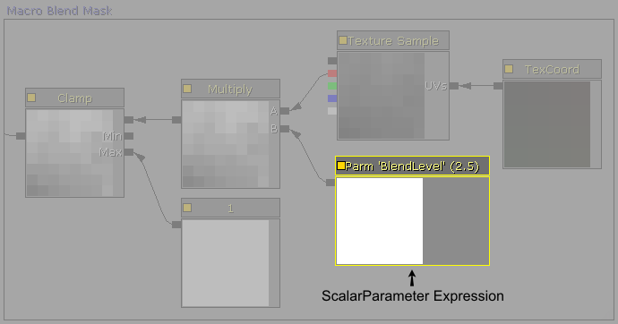
マテリアル表現式の基礎単位
テレインのためにデザインする複雑なマテリアル システムの多くは、各テレイン レイヤー テクスチャに一連の共通した「基礎単位」を使用しています。そこでまずは、これらのマテリアル セクションの機能を解説していきます。ディフューズ テクスチャの明るさと色合い
テレイン上のテクスチャ サンプラの数とゲーム タイトルの総テクスチャ カウントを減らすためには、明るさと色合いのモディファイヤを作成するのが単純な作業となります。ライト ブラウンやダーク ブラウンの砂といったように、さまざまな明るさや色合いのテクスチャ ファイルの複数のバージョンを作成する代わりに、VectorParameter 式からの値で RGB チャンネルを変更するような Multiply 式を使用して、マテリアル内のテクスチャを単純に変更できます。 テクスチャの明るさと色合いを変更するには、VectorParameter RGB プロパティを変更してください。1.0,1.0,1.0 がデフォルト値です。VectorParameter 式の A (アルファ) プロパティ値は、デフォルトの 1.0 のままで大丈夫です。
ディフューズ ディテール テクスチャの明るさ
グレースケール ディテール テクスチャを使用して、スケールの広い ディフューズ テクスチャの近接場のビュー クオリティを補う場合は、ディフューズ テクスチャの全体の明るさを変えないために、ディテール テクスチャの明るさのレベルを調整することが必要になります。これは、UnpackMax のディテール テクスチャのプロパティを設定することにより可能です。しかし、これにより明るさはその値に固定されます。ScalerParameter 式の値で RGBA チャンネルを変更するような Multiply 式を使用することにより、ディテール テクスチャのすべてのインスタンスの明るさを、必要に応じて変更することができます。 テクスチャの明るさを変更するには、ScalerParameter プロパティを変更してください。1.0 がデフォルト値です。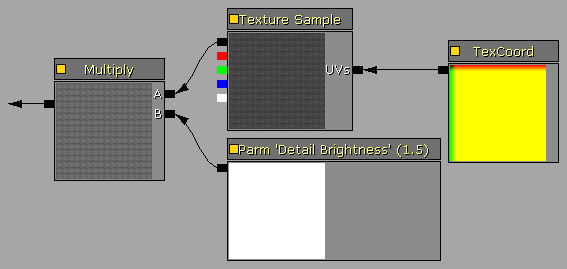
NormalMap ディテール テクスチャ ブレンドと強さ
NormalMaps はたいていの場合、岩だらけの崖や岩でできた山のような、テレインで使用される大きな岩のテクスチャのリアル感を大幅に向上させることができます。テクスチャ サイズの制限と 1024x1024 や 2048x2048 という一般的なテクスチャ解像度により、岩の ディフューズ テクスチャは、TerrainMaterial 内でより大きなサイズにスケールされ、現実世界の外観をシミュレートします。プレイヤーがこれらの岩のテクスチャに近づくと、大きなテクスチャ スケールは、それをぼやけて大きなピクセルで構成された岩のように見せてしまいます。岩の ディフューズ テクスチャにディテール テクスチャを使用することに加え、ディテール テクスチャは NormalMap でも使用可能です。 2 つの NormalMap テクスチャをミックスさせる際、1 つのテクスチャのブルー チャンネルを削除しないと、バンプ レンダリングが減少します。VectorParameter と Multiply 式は、メインの NormalMap テクスチャとディテール NormalMap テクスチャをミックスする前に、ディテール NormalMap テクスチャからブルー チャンネルを取り除きます。VectorParameter 式の R と G チャンネルもまた、ディテール テクスチャのバンプの強さを増加させるために 1.0 以上に調節することができます。
マスク ブレンド レベル
以下のカスタム マテリアルのいくつかは、テクスチャ ブレンディングなどの多くの関数を実行するのにグレースケール マスクを使用します。Multiply 式をコントロールするような ScalerParameter 式を使用することにより、簡易値の調整やインスタンス化のために、ブレンド ウェイト マスクをマテリアル内で直接変更することができます。Clamp 式や最大ノードにつながっている 1 の定数は、マスクの範囲が常に 0.0 と 1.0 の間であることを確保します。
Desaturation 式
Desaturation 式は色飽和を減らすために、既存のテクスチャを変更するのに使用されます。これは、中間色の岩や枯れた草などのテレインの地質システムに、より自然な陰影のブレンドを提供するために、テレイン テクスチャを変更するのにも使用できます。また、色、飽和、明るさなどの修正をマテリアル内で変更できるような、似たようなテクスチャを再利用することにより、出荷されたテレビ ゲーム タイトルやマップが必要とするテクスチャの総数を減らすこともできます。
複雑なマテリアル デザイン ノート
命名規則
パッケージの編成を改善し、エンジン オブジェクトの再利用をより簡単にするため、単純ですが厳密な命名規則が、作成されたすべての資産に使用されるべきです。推奨される命名規則のシステムは、以下の通りです。| TX_TextureName_D | ディフューズ テクスチャ |
| TX_TextureName_DO | アルファ チャンネルで半透明な ディフューズ テクスチャ |
| TX_TextureName_DS | アルファ チャンネルでスペキュラーな ディフューズ テクスチャ |
| TX_TextureName_N | normalmap テクスチャ |
| TX_TextureName_O | 半透明テクスチャ |
| TX_TextureName_S | スペキュラー テクスチャ |
| MAT_MaterialName | マテリアル |
| TM_MaterialName | テレイン マテリアル |
| TLS_SetupName | テレイン レイヤー セットアップ |
| TX_Detail[name] | ディテール テクスチャ 8 ビット グレースケール、またはパックされたビットプレーン | 例：TX_DetailRock1 |
| TX_Macro[name] | マクロ テクスチャ 8 ビット グレースケール、またはパックされたビットプレーン | 例：TX_MacroDirt |
| TX_Mask[name] | マスク テクスチャ 8 ビット グレースケール、またはパックされたビットプレーン | 例：TX_MaskRandom |
コメント グループと表現式の記述
複雑なマテリアル システムを構成する際には、マテリアル表現式記述の機能やコメント オブジェクトを使用するのが賢明な選択と言えるでしょう。これは、編成を大幅に改善し、複雑なマテリアルのレイアウトを読みやすくします。各表現式は “Desc” という記述のプロパティを含み、関数についてのコメントをしたり、その特有の表現式の値についてのコメントをしたりするのに、これをテキスト文字列に設定することができます。 マテリアル エディタ作業空間で右クリックをして、ポップアップ メニューから Comment (コメント) を選択するか、[c] を押すことで、コメント オブジェクトを追加することができます。コメント オブジェクトは、マテリアル関数セクションのグラフィックの_グループ ボックス_を提供するために、複数の既存の表現式の周りで折り返すことができます。新しいコメント オブジェクトを追加する際は、現在選択されている表現式のセットの周りで折り返すように、自動的にサイズを調節します。 表現式の記述：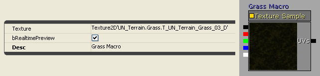
コメント ボックス：割り当てられたセットアップの変更
テレイン オブジェクトに割り当てられた TerrainLayerSetup で、配列内のマテリアル アイテムの挿入や削除、配列内のアイテムの順序の変更、1 つ以上のマテリアル アイテムの Noise (ノイズ)、Height (高さ)、Slope (傾き) プロパティの変更などの大幅な変更を行う場合は、まずはテレイン オブジェクトから TerrainLayerSetup の割り当てを外すことにより、かなりの性能のブーストが実現します。これにより、レンダリングされたテレイン ビューの画面上のビジュアル フィードバックが失われてしまうので、通常はアイテムを挿入、削除する場合や、Noise (ノイズ)、Height (高さ)、Slope (傾き) のプロパティの正常な変更値が既に分かっている場合に用いるのが良いでしょう。しかしながら、複数のマテリアル アイテムの削除のような大幅な変更には、テレイン オブジェクトから TerrainLayerSetup の割り当てを外し、変更を行い TerrainLayerSetup を割り当てし直すのが速いでしょう。 マップ ファイルに直接資産を格納している場合は、必ずマップを保存する前にテレイン オブジェクトに TerrainLayerSetups を割り当てし直してください。そうしないと、 自動的に未使用の資産カリング が、マップ ファイルを未使用の資産を削除してしまいます。テレイン マテリアルの再キャッシュ
マテリアル、TerrainMaterial、TerrainLayerSetup の変更や、これらのオブジェクトのレイアウト順序の変更などをテレイン マテリアル システムに加えるにつれて、それまでにエディタ ビューポートでレンダリングされたテレインは、これらの変更を表示するためにアップデートしないことがあります。 テレイン エディタ ユーザー ガイド ダイアログを表示するには、左のツールボックスのアイコンで [Terrain Editing Mode] (テレイン編集モード) ボタンをクリックします。そして Recache Terrain Materials (テレイン マテリアルの再キャッシュ) [RM] ボタンをクリックして、再キャッシュを強行します。 Recache terrain shaders (テレイン シェーダの再キャッシュ) の誘導メッセージ ボックスが消えると、テレイン システムはアップデートされたマテリアル セットアップを使用するようになります。
GPU シェーダ サポート
インストールベースの古いエンドユーザー ハードウェアへのサポートが必要な場合は、適度なビジュアル クオリティを持った、作業のできるレンダリング システムを維持するためには、レベル デザインとテレインの複雑さの程度を削減しなければいけません。このチュートリアルの中の多くの技術は、テクスチャ マッピング ユニット (TMU) が 8 個かそれより少ない Shader Model 2.0 のビデオ ハードウェアには、複雑で性能的に厳しいかも知れません。 ATI シリーズに関して言えば、これは Rage の 9600 から X800 シリーズのアダプタになります。X1000 シリーズやそれより高いものは Shader Model 2.0b、またはそれ以上をサポートしますが、X1000 や HD2000 シリーズの低いモデルは、4 個から 8 個の TMU に制限されるかも知れません。 NVidia シリーズに関して言えば、これは Riva の GeForce 4 から GeForce 5000 シリーズのアダプタになります。6000 シリーズやそれより高いものは Shader Model 3.0、またはそれ以上をサポートしますが、6000、7000、8000 シリーズの低いモデルは、2 個、4 個、または 8 個の TMU に制限されるかも知れません。 DirectX D3DCAPS は、ピクセル シェーダに関連する操作のサポートのレベルを元に戻します。| デバイスの機能 | 説明 |
| PixelShader1xMaxValue | レジスタに格納される値の範囲で [-PixelShader1xMaxValue, PixelShader1xMaxValue]。これはバージョン ps_1_1 から ps_1_4 のみに影響します。 |
| MaxSimultaneousTextures | 固定された関数パイプラインでは、テクスチャ サンプラの数は MaxTextureBlendStages を MaxSimultaneousTextures で割ります。ピクセル シェーダのテクスチャ サンプラの数は、次の表に示してあります。 |
| PixelShaderVersion | ハードウェアによってサポートされるピクセル シェーダのバージョンです。この数字と同等、またはそれよりも小さい数のバージョンのピクセル シェーダが、サポートされています。 |
| ピクセル シェーダ バージョン | テクスチャ サンプラの数 |
| ps_1_1 から ps_1_3 | 4 個のテクスチャ サンプラ |
| ps_1_4 | 6 個のテクスチャ サンプラ |
| ps_2_0 から ps_3_0 | 16 個のテクスチャ サンプラ |
| 固定関数ピクセル シェーダ | MaxTextureBlendStages/MaxSimultaneousTextures テクスチャ サンプラ |
マテリアルの複雑さ：テクスチャ サンプラを上回る、または多すぎる指示
Unreal Engine 3 のテレイン システムは GPU を使ってメッシュ レンダリングとテクスチャリングを行います。従って、レンダリングの能力は GPU ユニットのフィルレート、ピクセル シェーダ バージョン、ピクセル シェーダ エンジンの数、テクスチャ サンプラの数、テクスチャ マッピング ユニット (TMU) といった機能リストや性能によって制限されます。 テレイン メッシュは、Terrain.MaxComponentSize プロパティに基づいた長方形のパッチのブロックに分かれています。例えば、16 の MaxComponentSize は 16x16 パッチの各ブロックとなり、離散メッシュ レンダリング呼び出し (DrawMesh 呼び出し) によって管理されます。各離散メッシュ レンダリング呼び出しは、GPU のテクスチャ サンプラの総数に管理されるテクスチャの数によっても制限されます。なので、ピクセル シェーダ バージョンのテクスチャ サンプラの総数が、それぞれのテレイン構成部分内でレンダリングされるテクスチャの総数を決定します。この利用可能なテクスチャ サンプラの数が、テレイン構成部分で上回っていると、テレインはマルチカラー エラー テクスチャをレンダリングします。 それぞれのテレイン レイヤー セットアップに関して、常に 3 つのテクスチャ サンプラが、標準のライトマップ (法線マップをサポートするような3 つのライトの方向) に留保され、PC 専用の低いディテール フォールバックの単純なライトマップには、1 つのテクスチャ サンプラが留保されます。コンソールは単純なライトマップをサポートしていないので、ライトマップには常に 3 つのテクスチャ サンプラを必要とします。これに加えて、TerrainLayerSetup 内の各テレイン TextureMaterial アイテムは、その特定のテクスチャ レイヤーが、テレイン パッチのどこでレンダリングされるかを決定するような ウェイト マップ を必要とします。各ウェイト マップは 8 ビット グレースケール マスクなので、ARGB 32 ビット テクスチャの 1 つのビットプレーンを必要とします。また、これらは ARGB チャンネルとしてのテクスチャにとって、パックされた 4 つのビットプレーンです。従って、1 つの複合ウェイト マップ テクスチャは、4 つのテクスチャ レイヤーまでウェイト マップを管理することができます。 6 つの異なるテクスチャ レイヤーのようなテレイン セットアップの例などは、以下の数のテクスチャ サンプラを必要とします。- 3 つのライトマップ テクスチャ サンプラ
- 6 つのテクスチャ レイヤー テクスチャ サンプラ
- 2 つのウェイト マップ テクスチャ サンプラ。そのうち 1 つは 4 つのビットプレーンのすべてを使用し、もう 1 つは 2 つのビットプレーンを使用。
- 必要でないディテール テクスチャを削除する。
- 複数のグレースケール ディテール テクスチャを、1 つの ARGB テクスチャのビットプレーンに組み合わせる。
- 必要でない法線マップ テクスチャを削除する。
- 1 つ以上の ディフューズ テクスチャ レイヤーを削除する。
- 複数レイヤーの 1 つ以上の ディフューズ テクスチャを再利用する (2 つの個別のテクスチャ バリエーションを使用するのではなく、1 つの砂のテクスチャのみを使い、Material 式でカラー、明るさなどを追加するなど) ことにより、個別の ディフューズ テクスチャの総数を減らす。
- マクロやアルファマップに使用されるカスタム グレースケール マスクを、1 つのテクスチャを持つビットプレーンに組み合わせる。
- 複数のテクスチャを、以下の技術に示された方法で 1 つのテクスチャ クワドラントに組み合わせる。
- 総指示カウントを減らすためにマテリアル表現式デザインを単純化する。
- 適切ならば崖のようなテレイン ディテールを静的メッシュと置換することで、全体のテクスチャ カウントが減少する。
ディテール テクスチャとマスクをパックしてビットプレーンにする
テクスチャ サンプラを節約するには、テレイン マテリアル セットアップが複数のグレースケール ディテール テクスチャ、カスタム テクスチャ マクロ マスク、またはスーパー マスクを含む場合、これらをテクスチャのビットプレーンにパックすることが可能です (1 つの 32 ビット ARGB テクスチャは 4 つのパックされたテクスチャを提供します)。 Corel PhotoPaint では、 Image (画像) メニューの Combine Channels (チャンネルを組み合わせる) を選ぶことで、3 つの 8 ビット画像を 1 つの 24 ビット画像にパックすることができます。3 つの画像のそれぞれを選び、R、G、B チャンネルに割り当ててください。_Mask (マスク)_ メニューの Load from disk (ディスクから読み込み) を選び、4 つ目の 8 ビット画像を読み込み、マスクに入れることで 1 つの 32 ビット画像としてパックすることができます。.tga フォーマットのように 32 ビットファイルとして保存すると、マスクはアルファ チャンネルになります。 Adobe PhotoShop では、 Channels Palette (チャンネル パレット) フライアウトの Merge Channels (チャンネルをマージ) 機能を選ぶことで、3 つの 8 ビット画像を 1 つの 24 ビット画像にパックすることができます。モードとカラー チャンネルの数を選択し、その後どの画像を R、G、B チャンネルに割り当てるかを指定してください。
Adobe PhotoShop では、 Channels Palette (チャンネル パレット) フライアウトの Merge Channels (チャンネルをマージ) 機能を選ぶことで、3 つの 8 ビット画像を 1 つの 24 ビット画像にパックすることができます。モードとカラー チャンネルの数を選択し、その後どの画像を R、G、B チャンネルに割り当てるかを指定してください。
 パックされたすべてのディテール テクスチャの UV タイリング値が完全に同一である場合のみ、8 ビット グレースケール ディテール テクスチャは、1 つのテクスチャを持つビットプレーンに一度に 4 つまでパックすることができます。ディテール テクスチャは通常、8x、16x のようにすべてのテレイン マテリアルに似たようにスケールされるので、パックすることで必要となるテクスチャ サンプラを 4 対 1 まで減らすことができます。
パックされたすべてのディテール テクスチャの UV タイリング値が完全に同一である場合のみ、8 ビット グレースケール ディテール テクスチャは、1 つのテクスチャを持つビットプレーンに一度に 4 つまでパックすることができます。ディテール テクスチャは通常、8x、16x のようにすべてのテレイン マテリアルに似たようにスケールされるので、パックすることで必要となるテクスチャ サンプラを 4 対 1 まで減らすことができます。
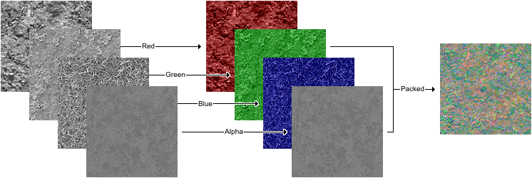
 同様に、複数の_マクロ_ テクスチャと_スーパー マスク_も、個別のテクスチャの数と必要となるテクスチャ サンプラの数を減らすために、1 つのテクスチャを持つビットプレーンにパックすることができます。これは、ビットプレーンにパックされた 4 つのスーパー マスクの例です。テレインのスクリーンショットは、このチュートリアルのスーパー マスクのセクションにあります。
同様に、複数の_マクロ_ テクスチャと_スーパー マスク_も、個別のテクスチャの数と必要となるテクスチャ サンプラの数を減らすために、1 つのテクスチャを持つビットプレーンにパックすることができます。これは、ビットプレーンにパックされた 4 つのスーパー マスクの例です。テレインのスクリーンショットは、このチュートリアルのスーパー マスクのセクションにあります。

ディテール テクスチャ：近接距離ディテールの追加
TerrainMaterial.Material.MappingScale 値が 2 以上のような大きいタイル スケール サイズでテレイン テクスチャを適用すると、これらのマテリアルがペイントされたテレイン エリアにプレイヤーが近づいたときのビジュアルはぼやけて見えます。 タイルされた細かい解像度ディテールを導入して、マテリアルにディテール テクスチャを追加することで、テクスチャの外見を改善することができます。ディテール テクスチャは通常、シームレスでタイルできる解像度が 128x128 の 8 ビット グレースケール画像です。 これらは Epic の Unreal Engine コンテンツからのディテール テクスチャの例です。 これらのテレインの例に、以下の TerrainMaterial.Material.MappingScale 値が 16 である岩の ディフューズ テクスチャにディテール テクスチャを追加してみましょう。すると、近接距離で見るとかなりぼやけて見えます。
これらのテレインの例に、以下の TerrainMaterial.Material.MappingScale 値が 16 である岩の ディフューズ テクスチャにディテール テクスチャを追加してみましょう。すると、近接距離で見るとかなりぼやけて見えます。
 選択された表現式は、このマテリアルで設定されたディテール テクスチャを提供します。
選択された表現式は、このマテリアルで設定されたディテール テクスチャを提供します。 - Texture Sample = ディテール テクスチャ。
- TexCoord = メインとなる岩の ディフューズ テクスチャに関するディテール テクスチャのタイリングの量。調節可能。
- ScalarParameter "Detail Brightness (ディテールの明るさ)" = ディテールの明るさのミックス値。これはマテリアルのインスタンス化をサポートします。インスタンス化が使用されない場合は、この表現式は Constant 式に変えることが可能です。
- Multiply = マテリアル ミックス内のディテール全体の明るさを調節するのに使用する、ディテール調節マルチプライヤです。
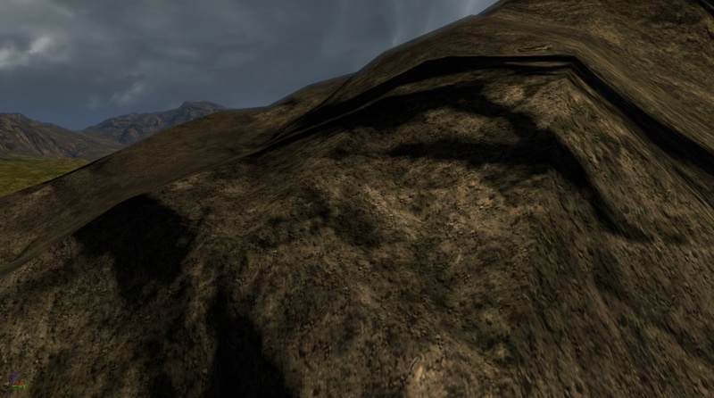
NormalMap テクスチャ：バンプ ディテールの追加
シーンのいかなるマテリアルにリアルさを追加する Unreal Engine の最も役に立つ機能の 1 つは NormalMaps です。NormalMaps はテクスチャに 3D 感を追加します。岩、砂利、草などのテレイン テクスチャに使用されると、結果としてビジュアルのディテールにかなりの増加が見られます。 NormalMap テクスチャは、いろいろなソースから作成することができます。NormalMaps は、NVidia Texture Tools や ATI NormalMapGenerator などのユーティリティを使用して、ディフューズ テクスチャ自身から作成することも可能です。NormalMaps はまた、これらの NVidia や ATI ツールを使用するほとんどのペイント ソフトウェアで作成される 8 ビット グレースケール ハイトマップ画像から作成することもできます。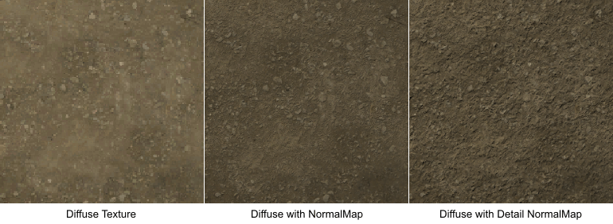
マテリアルの標準 NormalMap バージョンでは、NormalMap テクスチャは、Texture Sample 式としてノーマル ノードにつながっているだけです。 マテリアルのディテール NormalMap バージョンでは、以下の表現式であらわされるように、ディテール NormalMap セットアップの追加された標準の NormalMap テクスチャ サンプルでできた、一般的な NormalMap ミキサーを作成します。
マテリアルのディテール NormalMap バージョンでは、以下の表現式であらわされるように、ディテール NormalMap セットアップの追加された標準の NormalMap テクスチャ サンプルでできた、一般的な NormalMap ミキサーを作成します。 - Texture Sample = ディテール NormalMap テクスチャ。
- TexCoord = 標準の NormalMap テクスチャに関するディテール NormalMap テクスチャのタイリングの量。調節可能。
- VectorParameter "Detail NM Strength (ディテール NM の強さ)" = ディテール NormalMap の強さのミックス値。これはマテリアルのインスタンス化をサポートします。インスタンス化が使用されない場合は、この表現式は Constant3Vector に変えることが可能です。
- Multiply = マテリアル ミックス内のディテール NormalMap の全体のミックスを調節するのに使用する、ディテール調節マルチプライヤです。
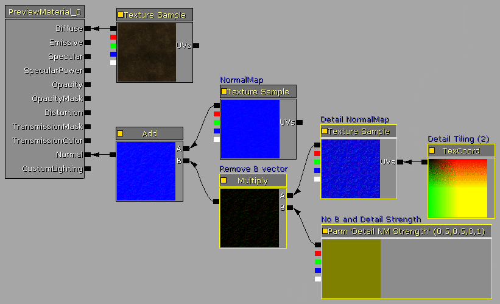
以下のスクリーンショットのように、マテリアルへの NormalMap テクスチャの追加は、テレイン テクスチャにかなりの 3D ビジュアル クオリティを追加することになります。ディテール NormalMap バージョンは、これに細かいディテールを追加することで、このビジュアル クオリティをさらに良いものにします。

 テレイン マテリアル セットアップ内でテクスチャ サンプラの数を超えた場合は、NormalMaps と ディテール NormalMaps を削除するのが無難でしょう。ディフューズ ディテール テクスチャは通常、NormalMaps や Detail NormalMaps よりも有益なビジュアル効果を追加します。
テレイン システムで使用されているエンジン バージョンが Specular (スペキュラー) を有効化している場合、すべてのテレイン マテリアルで無効化にしてください。特にこの場合、NormalMaps はテレインをつやつやに、またはプラスチックのように見せてしまうでしょう。性能の理由から、エンジンではテレインの Specular (スペキュラー) はデフォルトで無効化となっています。
テレイン マテリアル セットアップ内でテクスチャ サンプラの数を超えた場合は、NormalMaps と ディテール NormalMaps を削除するのが無難でしょう。ディフューズ ディテール テクスチャは通常、NormalMaps や Detail NormalMaps よりも有益なビジュアル効果を追加します。
テレイン システムで使用されているエンジン バージョンが Specular (スペキュラー) を有効化している場合、すべてのテレイン マテリアルで無効化にしてください。特にこの場合、NormalMaps はテレインをつやつやに、またはプラスチックのように見せてしまうでしょう。性能の理由から、エンジンではテレインの Specular (スペキュラー) はデフォルトで無効化となっています。
マルチ UV ミキシング：スカラー ミキシングを通してタイリングを減少させる
テレイン テクスチャを改善し、明らかなタイリングを減らすコストの低い方法の 1 つとしては、1 つのテクスチャを 2 つの異なる UV サイズでミックスする方法があります。同じテクスチャを 2 回利用する利点としては、コンパイルされたときに 1 つのテクスチャ サンプラのみしか使わないところにあります。この技術がシェーダ指示を少量増加させますが、一番最初になくなるリソースであるような追加のテクスチャ サンプラを必要としません。 この方法はたいてい、泥、草、砂といった細かいディテールを含むようなテクスチャでうまく効果を発揮します。崖の岩のような大きいディテールを持つテクスチャや深いマーキングを含むようなテクスチャは、この技術を使用すると自然に見えない場合があります。 マテリアルは標準の ディフューズ テクスチャと、それと同じテクスチャ サンプルの 2 つ目のコピーから成り立っています。そのテクスチャ サンプルの TexCoord 式は UV ノードに繋がっており、UV スケールを 2 倍から 4 倍に増やすように設定されています。TexCoord 式では、0.5 の値でスケールが 2倍になり、0.25 の値で スケールが 4 倍になります。
テクスチャを反転させ、全体の明らかなタイリングをより減らすためには、TexCoord タイリングには負の値も使えることに留意してください。この例では -0.25 の値が使用され、スケールされたテクスチャに反転した 4 倍のサイズが追加されます。
3 つ目の方法は、スケールされたテクスチャを 90 度、または 270 度回転させたものを使い、ビジュアル タイリングの減少をはかるものです。これは、以下にあるように Rotator 式で行うことができます。
明るくするマルチプライヤを、標準 ディフューズ テクスチャとテクスチャのスケールされたコピーの両方に追加します。これは、例えば 0.5 灰色をそれ自身で掛けると 0.25 (0.5 * 0.5 = 0.25) の濃い灰色になるので、全体のマテリアルの明るさを、ディフューズ テクスチャのみの場合に戻すためです。
"Brighten Amount" Constant 式は、各テクスチャ サンプルをどれだけ明るくするかを指定します。値は 4 が一般的になっています。マテリアル インスタンス バージョンにこれらの値を公開したい場合は、Constant 式は ScalarParameter 式と置換することが可能です。
この例では、2 つの緑のテクスチャを掛けると緑の草のテクスチャは異様に緑色になるので、テクスチャのスケールされたコピーで、Desaturation 式セットも使用し、テクスチャの彩度を 25% 減らします。
マテリアルは標準の ディフューズ テクスチャと、それと同じテクスチャ サンプルの 2 つ目のコピーから成り立っています。そのテクスチャ サンプルの TexCoord 式は UV ノードに繋がっており、UV スケールを 2 倍から 4 倍に増やすように設定されています。TexCoord 式では、0.5 の値でスケールが 2倍になり、0.25 の値で スケールが 4 倍になります。
テクスチャを反転させ、全体の明らかなタイリングをより減らすためには、TexCoord タイリングには負の値も使えることに留意してください。この例では -0.25 の値が使用され、スケールされたテクスチャに反転した 4 倍のサイズが追加されます。
3 つ目の方法は、スケールされたテクスチャを 90 度、または 270 度回転させたものを使い、ビジュアル タイリングの減少をはかるものです。これは、以下にあるように Rotator 式で行うことができます。
明るくするマルチプライヤを、標準 ディフューズ テクスチャとテクスチャのスケールされたコピーの両方に追加します。これは、例えば 0.5 灰色をそれ自身で掛けると 0.25 (0.5 * 0.5 = 0.25) の濃い灰色になるので、全体のマテリアルの明るさを、ディフューズ テクスチャのみの場合に戻すためです。
"Brighten Amount" Constant 式は、各テクスチャ サンプルをどれだけ明るくするかを指定します。値は 4 が一般的になっています。マテリアル インスタンス バージョンにこれらの値を公開したい場合は、Constant 式は ScalarParameter 式と置換することが可能です。
この例では、2 つの緑のテクスチャを掛けると緑の草のテクスチャは異様に緑色になるので、テクスチャのスケールされたコピーで、Desaturation 式セットも使用し、テクスチャの彩度を 25% 減らします。
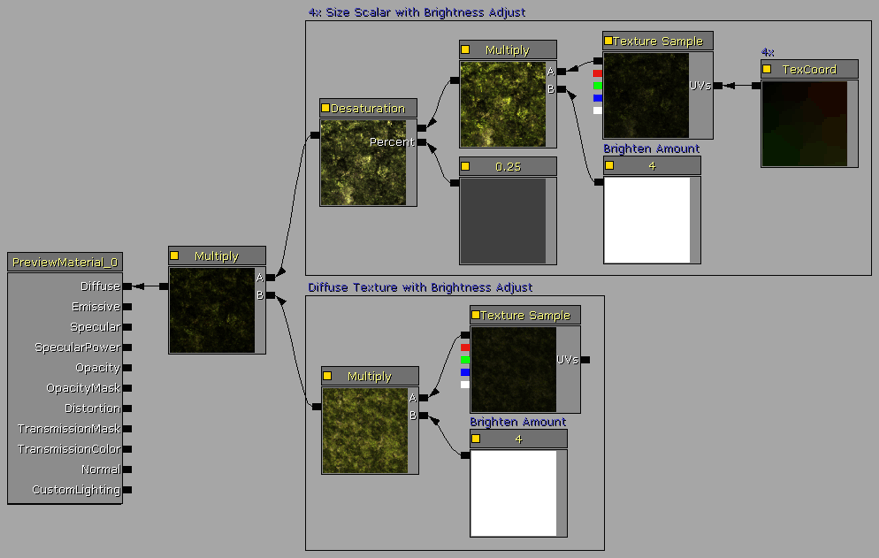
単純にテクスチャを反転したものの代わりに、スケールされたテクスチャの Rotator バージョンを使用するには、テクスチャ サンプルの UV 入力ノードにつながっている 1 つの TexCoord 式の場所に Rotator、TexCoord、Constant 式を追加します。 Rotator.CenterX と .CenterY プロパティをテクスチャの真ん中 (50%) である 0.5 に設定してください。そして、Rotator.Speed を 1.0 に設定してください。 2 倍にするには 0.5、4 倍にするには 0.25 というように、TexCoord.UTiling と .VTiling を希望のスケール サイズに設定してください。 これで Constant 式の値が、テクスチャの固定された回転の量を決定するようになります。Rotator.Speed の値が 1.0 だと、完全な 360 度の回転の Constant 値は 2π、約 6.28318 となります。従って、90 度の回転では 1.570795、180 度の回転では 3.14159、270 度の回転では 4.712385 となります。 注意：Rotator.Speed がテクスチャ回転の Constant の範囲を決定します。2.0 の Speed は Constant 値が 0.0 から π (3.14159) の 0 度から 360 度の回転になります。0.5 の Speed は Constant 値が 0.0 から 4π (12.56636) の 0 度から 360 度の回転になります。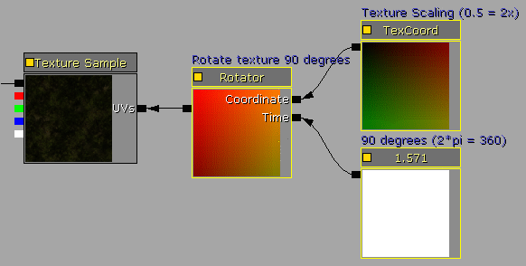
例に挙げるスクリーンショットを見ても分かりますように、最初のスクリーンショットでは、草のテクスチャのタイリングが非常に明白になっています。テクスチャをそれ自身と 4 倍のスケールでミックスすると、タイリングを減らすとともに、カメラ距離が遠くても近くてもマテリアルのビジュアルを良くします。

ランダム タイリング マスク：テクスチャ マッピングをランダムにし、タイリングを減らす
この方法は、複数のオーバーレイした UV スケールの使用がオプションにないテクスチャのスタイルで、無用の反復するビジュアル タイリングを減らします。これは、砂や泥のような色に一貫性のあるテクスチャ、特にコンクリート平板や金属板などの人間によって作られたタイル テクスチャで効果を発揮します。この技術での 1 つの制限は、テクスチャがすべての側面で適切にシームレスでなければならないということです。 マテリアルはソース テクスチャを 2 回使用し、必要とするテクスチャ サンプラの数を減らします。最初のソースの TextureSample は通常と同様に使用され、2 つ目のソースの TextureSample は Rotator セットアップを使用し、その TextureSample を 90、180、270 度に回転します。 このマテリアル セットアップの次の必要条件は、白いピクセルのランダムな吹き付けを黒いバックグラウンドに含むようなマスク テクスチャです。テクスチャはテレインのサーフェス全体でレンダリングされるので、白と黒のピクセル値は、使用されるソース テクスチャが通常か回転されたバージョンかを決定するのにマテリアル内で使用されます。 マスク テクスチャは 64x64 の 8 ビット グレースケール、または 24 ビットのカラー画像であるべきで、インポートする際にそのプロパティは CompressionNoAlpha = true、そして Compression Settings = TC_Default または TC_Grayscale と設定されていなければなりません。マスク テクスチャをインポートしたら、テクスチャのプロパティを Texture Viewer (テクスチャ ビューアー) で編集し、Filter = TF_Nearest にしてください。フィルタがこの値に設定されていないと、テクスチャはぼやけて見え、マテリアルは必要とされるように動作しません。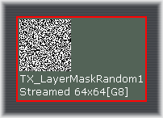
最初のソース TextureSample は通常のように使用されます。 2 つ目のソース TextureSample では、Rotator.CenterX と .CenterY プロパティをテクスチャの真ん中 (50%) である 0.5 に設定してください。そして、Rotator.Speed を 1.0 に設定してください。TexCoord.UTiling と .VTiling の両方を 1.0 に設定してください。 これで Constant 式の値が、テクスチャの固定された回転の量を決定するようになります。Rotator.Speed の値が 1.0 だと、完全な 360 度の回転の Constant 値は 2π、約 6.28318 となります。従って、90 度の回転では 1.570795、180 度の回転では 3.14159、270 度の回転では 4.712385 となります。 マスク TextureSample の UV 入力に繋がっている TexCoord 式は、1/texture_size に設定されるべきです。この場合は、1/64、または 0.015625 となります。ご希望ならば、16x16 (1/16 = 0.0625) や 32x32 (1/32 = 0.03125) のマスク テクスチャを使用することもできます。128x128 テクスチャを使用しない理由は、1/128 = 0.0078125 となり Unreal Engine の表現式は第 6 小数位までしかサポートしていないので、1/128 値の TexCoord は 0.007813 という風に四捨五入されてしまい、位置がずれるなどのビジュアル的な異常の原因となります。 マテリアル内の LinearInterpolate (Lerp) 式は、アルファ入力値に依存する A:B 入力を交換します。ランダムなピクセル マスクをアルファ入力に使用すると、Lerp は、ピクセルが白か黒かによって、通常、または回転したソース テクスチャ バージョンを選ぶようになります。 この機能を使用することで、マスク テクスチャに描かれた白対黒のピクセルのデザインにより通常と回転の特定のパターンを持つマテリアル オーバーレイを作成することも可能です。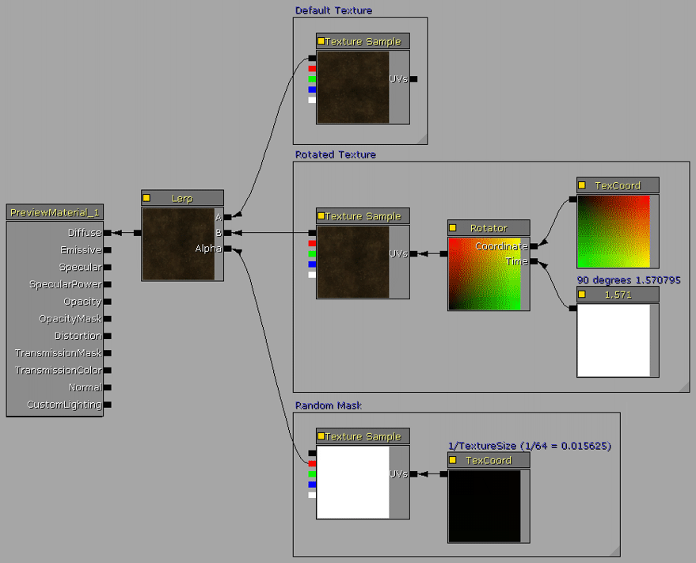
以下のスクリーンショットで見られるように、泥部分のテクスチャは見えるタイリング線を含んでおり、これをランダムで回転させることにより線を明白でないようにしてあります。

マクロ テクスチャ：バラエティのためにテクスチャをブレンドする
マクロ テクスチャ システムは、マテリアルのビジュアル タイリングを減少させ、マクロ マスクに従って 2 つのテクスチャ間をブレンドさせることによりテレイン全体のテクスチャのバラエティを増加させます。マクロ セットアップの主な必要条件は、草と泥、泥と岩などのようにうまくブレンドするような 2 つのソース テクスチャと、マクロ ブレンド マスクとして使用されるシームレスにタイリングできるようなグレースケール テクスチャです。 マクロ ブレンド マスクは、そのプロジェクトで使用可能な割り当てされたリソース サイズと、ブレンドされるテレイン エリアでの希望するバラエティの量により 128x128 から 1024x1024 までのいかなるテクスチャ サイズでも大丈夫です。マクロ ブレンド マスク テクスチャは、どのようなペイント ソフトウェアでも作成できるような 8 ビット グレースケール画像で、完全な 8 ビットの深度が使用されることが望ましいです。UnrealEd に DXT1、または G8 8 ビット グレースケールとしてインポートします。このチュートリアルの最初の方で解説したビットプレーン パッキング技術を用いることにより、マクロ マスクを 4 つまで組み合わせて 1 つのテクスチャにすることができます。これで、1 つの TexCoord マクロ サイズ のみの制限で、貴重なテクスチャ サンプラを節約することができます。 このマテリアルの例では、ここで紹介したマクロ テクスチャを使用していきますが、どのようなシームレス パターンでも使用することが可能です。使用するパターンは、テレインの高い部分からは見えるようになることに留意してください。従って、マスク パターンがランダムであればあるほど良いことになります。 マクロ マテリアルは比較的シンプルで、2 つのソース TextureSamples と、以下のマテリアル スクリーンショットで選択されているマクロ セットアップ表現式から成ります。マクロ テクスチャ内の 0 から 255 のグレースケールが、2 つのソース テクスチャ間でレンダリングするブレンドの量を決定できるように、マクロ セットアップは LinearInterpolate 式のアルファ入力ノードに繋がっています。
マクロ セットアップでは、以下のような表現式が使用されます。
マクロ マテリアルは比較的シンプルで、2 つのソース TextureSamples と、以下のマテリアル スクリーンショットで選択されているマクロ セットアップ表現式から成ります。マクロ テクスチャ内の 0 から 255 のグレースケールが、2 つのソース テクスチャ間でレンダリングするブレンドの量を決定できるように、マクロ セットアップは LinearInterpolate 式のアルファ入力ノードに繋がっています。
マクロ セットアップでは、以下のような表現式が使用されます。 - TextureSample = マクロ テクスチャを含みます。
- TexCoord = テレインに関わるので、マクロのサイズを決定します。ブレンド タイリングは、テレイン上の小さなエリアから大きなエリアの範囲に及びます。これは通常、0.25 (4 倍)、0.125 (8 倍)、またはより小さい値に設定されます。
- Multiply と、その Constant = "Macro Mix Level (マクロ ミックス レベル)" では、灰色の値を高くしたり低くしたりすることで、グレースケール マクロ テクスチャのブレンド レベルの微調整を可能にします。このマテリアルをインスタンス化して使用したい場合は、Constant 式を ScalarParameter 式と置換することも可能です。
- Clamp と、その Constant = マクロ出力レベルをクランプし、0.0 から 1.0 までの値にします。1.0 以上の値を使用すると、テレインのマテリアルをぼやけることがあります。
 以下のスクリーンショットで見られるように、泥のテクスチャが周りにブレンドされている方が、草のテクスチャはよりタイルされていないように見えて、バラエティに富んでいます。3 つ目のスクリーンショットは、テレインの頭上からの見降ろしのビューで、2 つのテクスチャのブレンドをより簡単に見ることができます。
以下のスクリーンショットで見られるように、泥のテクスチャが周りにブレンドされている方が、草のテクスチャはよりタイルされていないように見えて、バラエティに富んでいます。3 つ目のスクリーンショットは、テレインの頭上からの見降ろしのビューで、2 つのテクスチャのブレンドをより簡単に見ることができます。

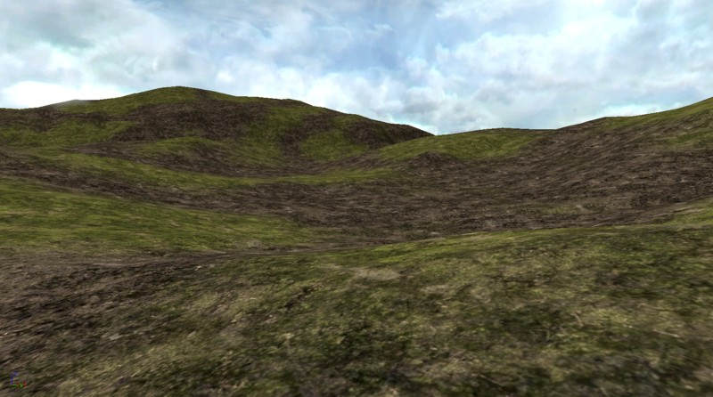

スーパー マスク：頂点レベルを超えてテレイン ディテールを増加させる
現在のテレイン レイヤー ペイント システムは、テレイン メッシュ頂点の解像度に制限されています。テレイン メッシュ頂点の数は、根底にあるテレイン ハイトマップと同じなので、それぞれのレイヤー ウェイトマップ はハイトマップの解像度と同じです。言い換えると、257x257 ハイトマップを含む 256x256 パッチ テレインは、レイヤー ペイント解像度が 257x257 の控えめなブレンド ピクセルを可能にするということです。これは、ほとんどのテレイン レイヤー ペイント ディテールにとって問題ありませんが、より細かい程度のテクスチャリングが希望される場合もあります。 ウェイトマップ は時に、 アルファマップ と言及されることがあることに留意してください。これは、テレイン レイヤー ブレンド システム内で、32 ビット画像内や PhotoShop などのペイント アプリケーション内のアルファ チャンネルと似たような機能を提供します。 このテレイン システムの詳細をさらに検証していくと、頂点上の明暗度のブレンドは、以下のイメージのようにペイントされた頂点部分でダイアモンド形にウェイトのかかった長方形のパターンになります。これは、灰色のテクスチャ レイヤーの上に白いテクスチャ レイヤーを乗せて、テレイン頂点を重ね合わせたテレイン レイヤー セットアップの画像です。ペイントされた頂点は 255 のウェイトマップ値を持っていますが、すべての周りの頂点は 0 のウェイトマップ値を持っています。 制限を持ち始める部分は、ペイントされたレイヤー テクスチャの実際の解像度内になります。以下の画像に見られるように、テクスチャは頂点から 2x2 のパッチ エリアにかけて滑らかになるので、レイヤー テクスチャのペイントされる最小の幅は 2 x DrawScale3D.X,.Y になります。従って、256 [Unreal Units (Unreal ユニット)] の DrawScale3D.X,.Y を持つテレインの場合、1 Unreal Unit (Unreal ユニット) = 2 センチのデフォルト エンジン スケールで、レイヤー テクスチャのペイントされた最小幅が 10.24m (2 x 5.12m)、または 33.6 フィート (2 x 16.8 フィート) となります。 これをパースペクティブとスケールに入れると、2 つの 3.5 メートルのレーンと路肩部分を持つような一般的な 2 つのレーンのハイウェイを建設することができます。相対的に、256 DrawScale テレイン上の 1 つのペイントされた頂点は、2 レーンのハイウェイとほぼ同等の幅になります。これは、小道、溝、小川などのテレイン レイヤー ディテールには、幅が広すぎます。テレイン DrawScale3D を減らすことにより、このレイヤー ウェイトマップのサイズの問題を解決しようとすると、密度の高すぎるテレインになり、視錐台内でレンダリングされるパッチの数が多すぎるためにフレームレートに影響を与える原因となります。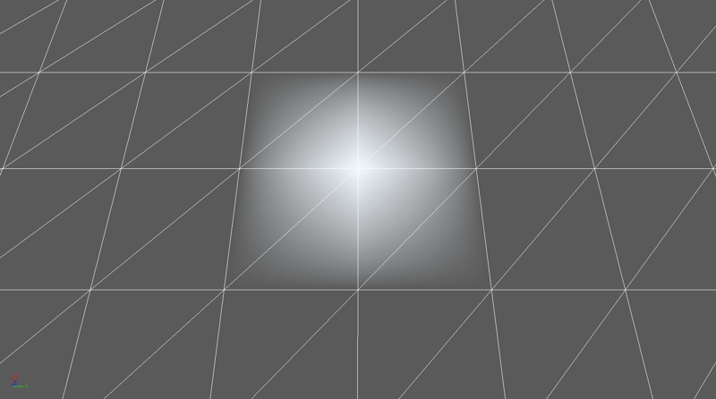
完全にペイントされたテレインのウェイトマップ テクスチャ ファイルとしては、この 256x256 テレインの例と同様なものと、その崖 (それらのパッチには、約 30 度から 90 度の傾斜があります) の 256x256 ウェイトマップがあります。この解像度と、ページの下のスーパー マスク テクスチャの例の解像度を比べてみてください。この 1 つの高解像度のスーパー マスクは、このページに合うために 1024x1024 から 880x880 に縮小されていることに留意してください。
 最近の 3D ビデオ アダプタは 8192x8192 までのテクスチャ解像度をサポートします。これは、現在のテレイン システム内の 256x256 ウェイトマップで可能なディテールの 1024 (32x32) 倍です。例として、8192 スーパー マスクと、標準の 256x256 テレインを比較すると、レイヤー テクスチャリング ディテールは強まり、 10.24m から 0.32m (33.6 フィートから 1.05 フィート) になります。
通常は、リソースがかかりすぎ、これほどに高解像度のファイルで作業するのは困難なので、1024x1024 か 2048x2048 のスーパー マスクで作業する方が簡単です。これでも、ほとんどのテレイン セットアップよりも高いレベルのディテールを提供します。例えば、1024x1024 スーパー マスクは 128x128 テレインよりも 64 倍も高いディテールを持ちます。
スーパー マスクは、どこで特定のテクスチャ レイヤーがレンダリングされるべきかを決定する高解像度の 8 ビット グレースケール テクスチャです。これは、アルファ チャンネルや不透明マスクと非常に似ています。スーパー マスクのファイルは、優れた PhotoShop スキルを有するアーティストにより手描きをしたり、さまざまなソフトウェア アプリケーションを使用する数々の方法でアルゴリズム的に作成したりも可能です。
このテレインの例では、テレインの 3 つの特徴のある地質部分を 3 つの高解像度の 1024x1024 マスクでアルゴリズム的に作成しました。地質部分は、岩石の多い尾根、侵食によるへこみ、水のある部分を囲んでいるビーチになります。1 つの RGB 24 ビット テクスチャのビットプレーンにパックされると、これらの 3 つのマスクは以下のような画像になります。その後このテクスチャが、標準的な CompressionNoAlpha DXT1 として UnrealEd にインポートされます。以下の画像は、このウェブ ページに収まるように、実際のテクスチャの 512x512 のバージョンに縮小されていることに留意してください。
一度スーパー マスク テクスチャを作成して、UnrealEd にインポートすると、各スーパー マスク ビットプレーンのそれぞれの表現式の_ブロック_は必然的に同一となるので、これを使うために必要なマテリアル セットアップは比較的単純です。
以下のマテリアル画像に見られる通りです。
最近の 3D ビデオ アダプタは 8192x8192 までのテクスチャ解像度をサポートします。これは、現在のテレイン システム内の 256x256 ウェイトマップで可能なディテールの 1024 (32x32) 倍です。例として、8192 スーパー マスクと、標準の 256x256 テレインを比較すると、レイヤー テクスチャリング ディテールは強まり、 10.24m から 0.32m (33.6 フィートから 1.05 フィート) になります。
通常は、リソースがかかりすぎ、これほどに高解像度のファイルで作業するのは困難なので、1024x1024 か 2048x2048 のスーパー マスクで作業する方が簡単です。これでも、ほとんどのテレイン セットアップよりも高いレベルのディテールを提供します。例えば、1024x1024 スーパー マスクは 128x128 テレインよりも 64 倍も高いディテールを持ちます。
スーパー マスクは、どこで特定のテクスチャ レイヤーがレンダリングされるべきかを決定する高解像度の 8 ビット グレースケール テクスチャです。これは、アルファ チャンネルや不透明マスクと非常に似ています。スーパー マスクのファイルは、優れた PhotoShop スキルを有するアーティストにより手描きをしたり、さまざまなソフトウェア アプリケーションを使用する数々の方法でアルゴリズム的に作成したりも可能です。
このテレインの例では、テレインの 3 つの特徴のある地質部分を 3 つの高解像度の 1024x1024 マスクでアルゴリズム的に作成しました。地質部分は、岩石の多い尾根、侵食によるへこみ、水のある部分を囲んでいるビーチになります。1 つの RGB 24 ビット テクスチャのビットプレーンにパックされると、これらの 3 つのマスクは以下のような画像になります。その後このテクスチャが、標準的な CompressionNoAlpha DXT1 として UnrealEd にインポートされます。以下の画像は、このウェブ ページに収まるように、実際のテクスチャの 512x512 のバージョンに縮小されていることに留意してください。
一度スーパー マスク テクスチャを作成して、UnrealEd にインポートすると、各スーパー マスク ビットプレーンのそれぞれの表現式の_ブロック_は必然的に同一となるので、これを使うために必要なマテリアル セットアップは比較的単純です。
以下のマテリアル画像に見られる通りです。 - LinearInterpolate 式は、スーパー マスクの R ビットプレーンに基づいて、Base (ベース) と Ridge (尾根) のテクスチャをブレンドします。
- LinearInterpolate 式は、スーパー マスクの G ビットプレーンに基づいて、Erosion (侵食) のテクスチャをブレンドインします。
- LinearInterpolate 式は、スーパー マスクの B ビットプレーンに基づいて、Beach (ビーチ) のテクスチャをブレンドインします。
- TextureSamples の UV 入力ノードに繋がっている TexCoord 式は、TerrainMaterial オブジェクトの UTiling,VTiling プロパティに似たタイリングの量を指定します。
 最終的なマテリアルは、原則的にテレイン レイヤー テクスチャリングのオーバーヘッド 1:1レイアウトで、汎用ブラウザ内でこのように見えます。
最終的なマテリアルは、原則的にテレイン レイヤー テクスチャリングのオーバーヘッド 1:1レイアウトで、汎用ブラウザ内でこのように見えます。
 新しい TerrainMaterial を作成し、スーパー マスク マテリアルを マテリアル プロパティへ割り当てます。TerrainMaterial MappingScale プロパティをテレインと同じ解像度に設定します (例：テレイン パッチの数)。この例では、256x256 パッチ テレインを使用しています。これは、スーパー マスク マテリアルを 1:1 のスケールでテレイン上にレンダリングします。
新しい TerrainMaterial を作成し、スーパー マスク マテリアルを マテリアル プロパティへ割り当てます。TerrainMaterial MappingScale プロパティをテレインと同じ解像度に設定します (例：テレイン パッチの数)。この例では、256x256 パッチ テレインを使用しています。これは、スーパー マスク マテリアルを 1:1 のスケールでテレイン上にレンダリングします。
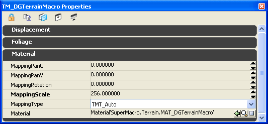
これは、1024x1024 スーパー マスク システムをマテリアル レイヤリングに使用し、通常のペイント ディテールの 16 倍を提供して最終的に出来上がった 256x256 テレインです。
1:1 NormalMap でテレイン「解像度」を上げる
NormalMaps で通常のメッシュのディテールを増加させるのと同じ方法を用いて、1024x1024、またはより大きなディテールの細かい NormalMap を追加することによっても、テレイン解像度のディテールを上げることができます。この NormalMap テクスチャは、256x256 テレイン ハイトマップに 4x4 解像度の増加でアルゴリズム的に作成されました。NormalMap テクスチャは、標準の NormalMap のようにインポートされ、マテリアル法線ノードに適用されます。 これらのスクリーンショットは NormalMap が適用された時とされていない時の違いを表しています。NormalMap の深度は、効果を上げるために増加しています。
これらのスクリーンショットは NormalMap が適用された時とされていない時の違いを表しています。NormalMap の深度は、効果を上げるために増加しています。


テクスチャ パッキング：大きなテクスチャ タイル セットを実装する
利用可能なテクスチャ サンプラの数よりも多くのテクスチャが必要な場合は、複数のサブテクスチャをより大きいタイルされたテクスチャにパックすることが可能です。クリエイティブなマテリアル表現式を使うと、個々のレイヤー使用にタイルから個々のテクスチャを展開することができます。 テクスチャ タイルを実装する際のトレードオフは、性能への影響とマテリアルの複雑さです。4 つの別々のテクスチャは テクスチャ選択 のオーバーヘッドを持ちますが、テクスチャ タイルはピクセル シェーダで必要な サブテクスチャ選択 を持ち、これはテクスチャ座標から膨大なテクスチャのタイル化への変換のオーバーヘッドを持っています。また、 エッジ パディング を含むために、タイル内のソース テクスチャを変換するのに、アートに余計な時間を必要とします。主な利点は 4 つ (またはそれより多く) のテクスチャを 1 つのテクスチャにパックできるということで、これはテクスチャ サンプラの使用量を減らし、より多くのテレイン テクスチャ レイヤーを使用することが可能になります。 この技術は通常、結果として小さなテクスチャ シームがテレインのさまざまな場所に出現してしまうので、ゲーム デザインによってこの使用が可能である場合のみに使用するべきです。プレイヤーやカメラがサーフェスに近いようなテレインに関しては、メッシュやフォリッジを使用してこのシームをカバーしない限り、これを使用するには問題が顕著すぎるようになります。 タイル内の各離散テクスチャは、座標エラーがにじみを起こす問題を防ぐためにも、きちんとマッチするべき、またはエッジ パディングを付けるべきです。これがきちんと説明されず修正されないと、テレインにレンダリングされた際に各サブテクスチャのエッジに沿って、薄いタイリング ラインが見えることがあります。この問題に対する最善の方法は、各タイルに 4 つのターマック バリエーション (例：基本的な舗装道路、2 つの実線を持つ舗装道路、1 つの実線と 1 つの点線を持つ舗装道路、2 つの点線を持つ舗装道路) などの似たようなテクスチャを使用するか、少なくとも 1 ピクセルのエッジ パディングがあるようにテクスチャを編集するかです。例えば、1024x1024 テクスチャは 1022x1022 にリサイズした後に、1 つのピクセル エッジを外側に複製することにより、エッジ パディングをかけます。エッジ パディングを使用する際は、1024 サブテクスチャよりも微妙に小さくなるエリアが展開されるように、Constant2Vector 値を変更することが必要になります。これはたいていの場合、StartX,Y が微妙に大きな値になり、EndX,Y が微妙に小さい値になることを意味します。調整の量は、TexCoord タイリング量によっても変わってくるので、ここでは、「必ずこれで大丈夫」というような数は提供していません。よりマッチするサブテクスチャを単純に使用する方が、かなりの違いのあるサブテクスチャの間に起きる、強いにじみのラインを取り除こうとするのに時間をかけるよりも簡単です。 このテクスチャ タイルの例では、4 つの 1024x1024 テクスチャが 1 つの 2048x2048、2x2 タイル画像にパックされています。これは、たった 1 つのテクスチャを使用することで、テレイン上の岩、泥、コケをレイヤリングすることができます。 インポートされたクワドラント テクスチャは以下のように見えます。デフォルトで使用される低いミップ レベルが使用されるのを防ぐために、より大きな 2048x2048 テクスチャ サイズへのサポートをする適切な LODGroup を指定するようにしてください。 この例のテレイン セットアップでは、クワドラント テクスチャが 4 つの別々のマテリアルで各タイルに 1 つ使用されます。全体のテレイン レイヤー セットアップを 1 つのマテリアル システムに組合わせるのに、スーパー マスクなどのその他のテレイン レイヤリングの方法と共にテクスチャ タイル セットアップを使用することも可能です。
これらが 4 つのマテリアルです。
この例のテレイン セットアップでは、クワドラント テクスチャが 4 つの別々のマテリアルで各タイルに 1 つ使用されます。全体のテレイン レイヤー セットアップを 1 つのマテリアル システムに組合わせるのに、スーパー マスクなどのその他のテレイン レイヤリングの方法と共にテクスチャ タイル セットアップを使用することも可能です。
これらが 4 つのマテリアルです。
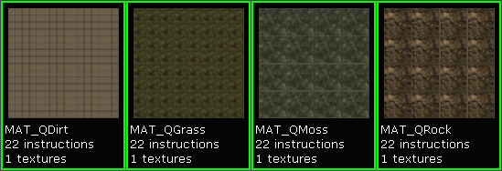
各マテリアルに使用されている表現式を見ると、サブテクスチャ U/VTiling 量を設定するのと、どのサブテクスチャを展開するかを指定するのに、すべて必然的に多少の表現式の値の違いをもつものも、同じセットアップであることが分かります。 テレインのレイヤー マテリアル タイリングは、これらのマテリアルの TextureCoordinate により設定されるのであり、TerrainMaterial.MappingScale プロパティにより設定されるわけではありません。- TexCoord： テクスチャの UTiling 量と VTiling 量を指定します。一般的な値は 4、8、または 16 です。
- Frac： 座標がサブテクスチャのみにタイルされるように TexCoord により指定されたように小数部分を繰り返します。
- Constant2Vector： 展開されたファイルの EndX,Y 座標を指定します。2x2 のタイルでは、これは 1/2 か 0.5 であるべきです。
- Constant2Vector： 展開されたファイルの StartX,Y 座標を指定します。2x2 のタイルでは、展開するタイルにより、これは 0.0 か 0.5 であるべきです。
- TextureSample： テクスチャ タイルを指定します。

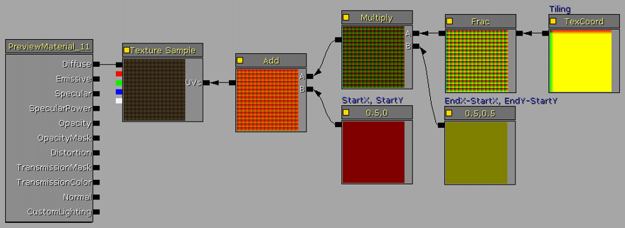
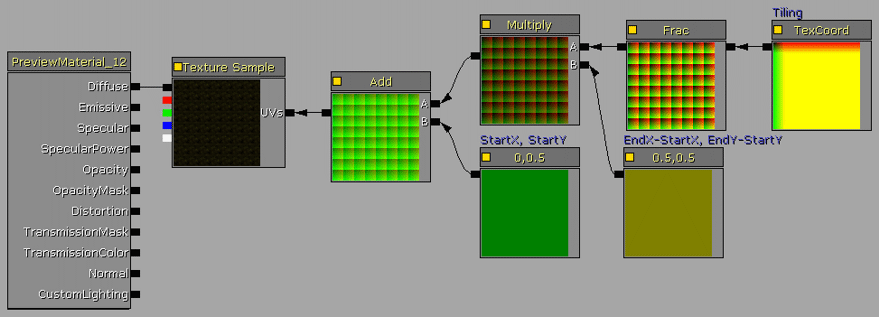
 次のステップは、各マテリアルに 1 つ必要な TerrainMaterial オブジェクトと TerrainLayerSetup を作成します。
次のステップは、各マテリアルに 1 つ必要な TerrainMaterial オブジェクトと TerrainLayerSetup を作成します。TerrainMaterial.MappingScale は 256x256 のテレインには 256、というようにパッチ内のテレインのサイズに設定されなければいけません。これで、TerrainMaterial の 1:1 マッピングになります。 この例では、TerrainLayerSetup は 4 つの TerrainMaterials に 4 つの手続き型入力を使用しており、Height (高さ) と Slope (傾き) のプロパティは、結果的にさまざまな崖や平地のレイヤー バラエティになるように設定されています。
 最終的にはテレインはこのように見えます。
最終的にはテレインはこのように見えます。
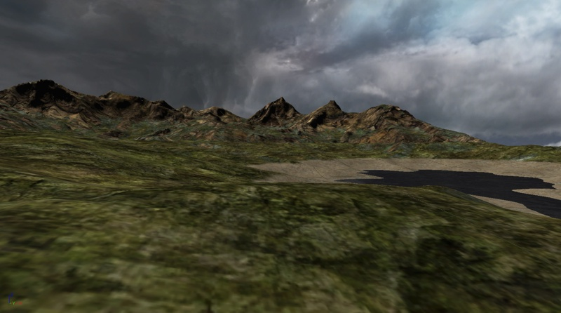
1:1 オーバーレイ：複数の高解像度テクスチャをテレイン全体でタイルする
現在のビデオ ハードウェアと次世代機のゲーム エンジンは、2048、4096、8192 といったより大きなテクスチャ解像度をサポートしています。この機能サポートは、サテライト DEMs (デジタル標高モデル) や高解像度のカラー航空写真の数や質の増加にとともに使用されるようになってきました。 DEM ハイトマップと 1 つ以上のカラー航空写真を組み合わせることにより、ビルトインの TerrainLayerSetup 手続き型の Height (高さ) と Slope (傾き) システムを超えるようなディテールを持つ、リアルなテレイン システムを作成することができます。1 つ以上の高解像度カラー航空写真を使用すると、岩、泥、草というような 4、5 つの別々のテクスチャを単純に使用するよりも広いバラエティのテクスチャを得ることができます。使用可能な DEM ハイトマップと航空写真が、10m または 15m、またはそれよりも低い空間分解能の場合、プレイ エリアの周りの山といった周囲のテレインに使用することができます。このオーバーレイ テクスチャ機能を使用すると、周囲のテレインは低い解像度で、プレイ エリア部分は高い解像度で、という 2 つのテレイン セットアップを構築することが可能です。 各個別のテレイン アクタは 1:1 オーバーレイ テクスチャのみしか使用しないので、テクスチャ サンプラがなくなるようなことはなく、結果としてできるテレイン レンダリングはマルチテクスチャ ウェイトマップを使用したレイヤー セットアプよりも通常速くなります。 サンフランシスコの一部に設定された中解像度の DEM ハイトマップ データを、社内のソフトウェアを使用して構築し、513x513 にサンプルし直し、Unreal G16 フォーマットに変換しました。513x513 ハイトマップは 512x512 パッチのテレインになります。 17254x15490 の高解像度のカラー航空写真は、オンライン サービスのソースを基にしました。これを標準のペイント アプリケーションにロードし、DEM ハイトマップ エリアと同じ場所を切り取りました。切り取られたテクスチャを UnrealEd での使用に適切な 2 乗のかたち (この場合では 2048x2048) にサンプルし直します。高解像度のテクスチャをインポートする際には、最大テクスチャ ミップ サイズがサポートされるように、適切な LODGroup を選択するようにしてください。
17254x15490 の高解像度のカラー航空写真は、オンライン サービスのソースを基にしました。これを標準のペイント アプリケーションにロードし、DEM ハイトマップ エリアと同じ場所を切り取りました。切り取られたテクスチャを UnrealEd での使用に適切な 2 乗のかたち (この場合では 2048x2048) にサンプルし直します。高解像度のテクスチャをインポートする際には、最大テクスチャ ミップ サイズがサポートされるように、適切な LODGroup を選択するようにしてください。
 オリジナル写真の著作権は Geosage.com にあります。
テクスチャの基礎となるマテリアルが作成されました。TextureSample は ディフューズ ノードに繋がっています。
基礎となる TerrainMaterial とそれに割り当てられるマテリアルが作成されました。TerrainMaterial.MappingScale は 512x512 のテレインには 512、というようにパッチ内のテレインのサイズに設定されなければいけません。これで、TerrainMaterial の 1:1 マッピングになります。
基礎となる TerrainLayerSetup とそれに割り当てられる TerrainMaterial が作成されました。その後、TerrainLayerSetup がテレイン アクタに割り当てられます。
オリジナル写真の著作権は Geosage.com にあります。
テクスチャの基礎となるマテリアルが作成されました。TextureSample は ディフューズ ノードに繋がっています。
基礎となる TerrainMaterial とそれに割り当てられるマテリアルが作成されました。TerrainMaterial.MappingScale は 512x512 のテレインには 512、というようにパッチ内のテレインのサイズに設定されなければいけません。これで、TerrainMaterial の 1:1 マッピングになります。
基礎となる TerrainLayerSetup とそれに割り当てられる TerrainMaterial が作成されました。その後、TerrainLayerSetup がテレイン アクタに割り当てられます。
 この例のテレインは、サンフランシスコ湾のもので山の方に向かって内陸部を見ている感じになります。
この例のテレインは、サンフランシスコ湾のもので山の方に向かって内陸部を見ている感じになります。

拡張されたオーバーレイ マルチタイリング
オーバーレイ技術の拡張されたバージョンは、16384x16384 テレイン テクスチャリング システムのための 8192x8192 テクスチャの 2x2 レイアウトのような、複数のタイルされた高解像度テクスチャを使用することに関わりがあります。この方法を使用することで、GIS (地理情報システム) やその他の現実世界のテレインの視覚化に似たような、非常に複雑で高解像度のテレイン テクスチャリングが可能になります。 テレイン ハイトマップは、レンダリングをしたいエリアの高解像度 DEM データをソースとしています。この例では、512x512 パッチ テレインのために 513x513 にリサイズされています。その後、このハイトマップは G16 フォーマットに変換され、テレイン エディタ ユーザー ガイド ダイアログを介してテレインにインポートされます。 テレインのビジュアル ディテールを改善するのに、高解像度 DEM ハイトマップを 1:1 の法線マップにソースとして使用できることを覚えておいてください。例えば、ソースとなる DEM データが 2048x2048 で、最終的なゲーム内のテレインが 256x256 だとすると、ソースとなる DEM を 2048x2048 法線マップ テクスチャに変換し、テレイン上で 1:1 オーバーレイに使用することができます。結果的に、テレイン解像度ディテールが増加します。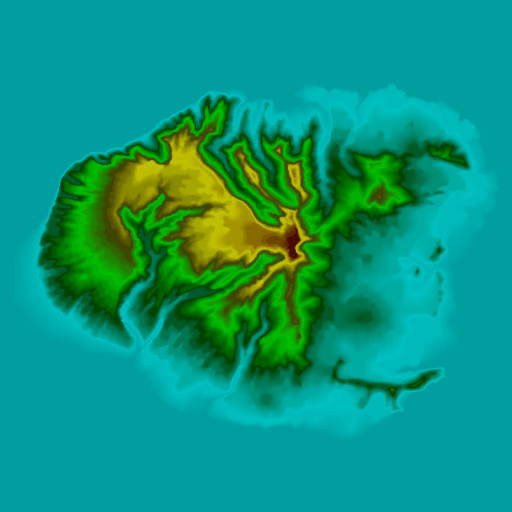
その後、ハイトマップ データと同じエリアの高解像度サテライト画像を、オーバーレイ テクスチャに使います。この例では、15m の画像セットを使って 13000x13000 テクスチャを提供しています。その後、8192x8192 にサンプルし直され、4096x4096 のクワドラント テクスチャに分けられます。テレイン上のシーム ラインを取り除くには、2 つの内側のエッジから 2 つの外側のエッジにコピーされた 1 つ以上のピクセル ストリップが、各クワドラント テクスチャに必要になってきます。8192x8192 テクスチャは、マテリアル内で 1 つのテクスチャ サンプルとして使用することができますが、そのテレインは最新世代のビデオ アダプタでしか使用できなくなります。4096 テクスチャを使用することで、ビデオ ハードウェア サポートを増加させることになります。 高解像度 DEM から法線マップテクスチャを作成するのと似たような方法で、高解像度のサテライト画像から法線マップを引き出すことも可能です。この画像には、テレインと比較的垂直になるようなライト ソースがあり、鮮明であることが条件となります。 4 つの 4096x4096 テクスチャを UnrealEd にインポートします。それらは、4096 サイズ テクスチャをサポートするような CompressionNoAlpha と LODGroup い設定されています。
4 つの 4096x4096 テクスチャを UnrealEd にインポートします。それらは、4096 サイズ テクスチャをサポートするような CompressionNoAlpha と LODGroup い設定されています。
 その後、3 つの黒いピクセルと 1 つの白いピクセルを持つ 2x2 テクスチャである_クワドラント マスク_ テクスチャをペイント ソフトウェアで作成します。これは、テレイン上でそれぞれのソース クワドラント テクスチャがどこでレンダリングされるかを決定するマスキングのために使用されます。白いピクセルは、テクスチャがその場所でレンダリングされることを決定します。3x3 や 4x4 タイリングのようなより大きなタイリング システムが実装される場合は、このマスクは必要に応じて作成されます。
テクスチャは 2x2 で、圧縮が必要ないので、圧縮せずにインポートします。
このスクリーンショットでは、鮮明さのためにテクスチャは大きいサイズにズームされています。
その後、3 つの黒いピクセルと 1 つの白いピクセルを持つ 2x2 テクスチャである_クワドラント マスク_ テクスチャをペイント ソフトウェアで作成します。これは、テレイン上でそれぞれのソース クワドラント テクスチャがどこでレンダリングされるかを決定するマスキングのために使用されます。白いピクセルは、テクスチャがその場所でレンダリングされることを決定します。3x3 や 4x4 タイリングのようなより大きなタイリング システムが実装される場合は、このマスクは必要に応じて作成されます。
テクスチャは 2x2 で、圧縮が必要ないので、圧縮せずにインポートします。
このスクリーンショットでは、鮮明さのためにテクスチャは大きいサイズにズームされています。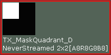
実際のマテリアルは、必要な2x2 タイリングを提供するために UV ノードに繋がった TexCoord を持つような単純な TextureSamples のセットです。 その後、クワドラント マスクはアルファ入力として使用され、LinearInterpolate 式を介して、各 TextureSample がどのクワドラントにレンダリングされるかを設定します。クワドラント マスクの UV ノードに繋がった TexCoords は、白いピクセルが希望のクワドラント ロケーションに存在するように、テクスチャを適切に反転させるのに使用されます。 TerrainMaterial が作成されました。Material.MappingScale のこれのプロパティは、パッチ内のテレインのサイズに設定され、この例の場合は 512 になります。マテリアルは Material.Material プロパティに割り当てられます。
TerrainLayerSetup が作成されました。配列には 1 つの入力が追加され、TerrainMaterial は Materials[0].Material プロパティに割り当てられます。
その後、TerrainLayerSetup がテレイン アクタのレイヤー配列に割り当てられます。
TerrainMaterial が作成されました。Material.MappingScale のこれのプロパティは、パッチ内のテレインのサイズに設定され、この例の場合は 512 になります。マテリアルは Material.Material プロパティに割り当てられます。
TerrainLayerSetup が作成されました。配列には 1 つの入力が追加され、TerrainMaterial は Materials[0].Material プロパティに割り当てられます。
その後、TerrainLayerSetup がテレイン アクタのレイヤー配列に割り当てられます。
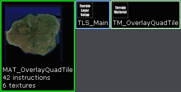
この例のテレインはハワイのカウアイ島のものです。ハイトマップは 513x513、タイル オーバーレイ マテリアルは 4 つの 4096x4096 テクスチャ、法線マップは 8192x8192 のソース オーバーレイ テクスチャから引き出した 4096x4096 です。
- DGSuperMask?.gif: